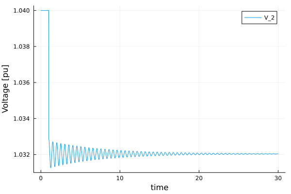

One Machine against Infinite Bus (OMIB) Simulation
Originally Contributed by: Rodrigo Henriquez-Auba and José Daniel Lara
Introduction
This tutorial will introduce you to the functionality of PowerSimulationsDynamics for running power system dynamic simulations.
This tutorial presents a simulation of a two-bus system with an infinite bus (represented as a voltage source behind an impedance) at bus 1, and a classic machine on bus 2. The perturbation will be the trip of one of the two circuits (doubling its resistance and impedance) of the line that connects both buses.
Dependencies
julia> using PowerSimulationsDynamicsjulia> PSID = PowerSimulationsDynamicsPowerSimulationsDynamicsjulia> using PowerSystemCaseBuilderjulia> using PowerSystemsjulia> const PSY = PowerSystemsPowerSystemsjulia> using Sundialsjulia> using Plotsjulia> gr()Plots.GRBackend()
PowerSystemCaseBuilder.jl is a helper library that makes it easier to reproduce examples in the documentation and tutorials. Normally you would pass your local files to create the system data instead of calling the function build_system. For more details visit PowerSystemCaseBuilder Documentation
PowerSystems (abbreviated with PSY) is used to properly define the data structure and establish an equilibrium point initial condition with a power flow routine, while Sundials is used to solve the problem defined in PowerSimulationsDynamics.
Load the system
We load the system using PowerSystemCaseBuilder.jl:
julia> omib_sys = build_system(PSIDSystems, "OMIB System")System ┌───────────────────┬─────────────┐ │ Property │ Value │ ├───────────────────┼─────────────┤ │ Name │ │ │ Description │ │ │ System Units Base │ SYSTEM_BASE │ │ Base Power │ 100.0 │ │ Base Frequency │ 60.0 │ │ Num Components │ 10 │ └───────────────────┴─────────────┘ Static Components ┌─────────────────┬───────┬────────────────────────┬───────────────┐ │ Type │ Count │ Has Static Time Series │ Has Forecasts │ ├─────────────────┼───────┼────────────────────────┼───────────────┤ │ ACBus │ 2 │ false │ false │ │ Arc │ 1 │ false │ false │ │ Area │ 1 │ false │ false │ │ Line │ 2 │ false │ false │ │ LoadZone │ 1 │ false │ false │ │ Source │ 1 │ false │ false │ │ ThermalStandard │ 1 │ false │ false │ └─────────────────┴───────┴────────────────────────┴───────────────┘ Dynamic Components ┌──────────────────┬───────┐ │ Type │ Count │ ├──────────────────┼───────┤ │ DynamicGenerator │ 1 │ └──────────────────┴───────┘
Build the simulation and initialize the problem
The next step is to create the simulation structure. This will create the indexing of our system that will be used to formulate the differential-algebraic system of equations. To do so, it is required to specify the perturbation that will occur in the system. PowerSimulationsDynamics supports multiple types of perturbations. See Perturbations
Here, we will use a Branch Trip perturbation, that is modeled by modifying the specifying which line we want to trip. In this case we disconnect one of the lines that connects BUS 1 and BUS 2, named "BUS 1-BUS 2-i_1".
With this, we are ready to create our simulation structure:
julia> time_span = (0.0, 30.0)(0.0, 30.0)julia> perturbation_trip = BranchTrip(1.0, Line, "BUS 1-BUS 2-i_1")BranchTrip(1.0, Line, "BUS 1-BUS 2-i_1")julia> sim = PSID.Simulation( ResidualModel, # Type of formulation omib_sys, # System mktempdir(), # Output directory time_span, perturbation_trip)┌ Error: ResidualModel failed to build │ exception = │ ArgumentError: get_reactive_power_limits not implemented for Source │ Stacktrace: │ [1] get_reactive_power_limits(#unused#::Source) │ @ PowerSystems ~/.julia/packages/PowerSystems/eHeD3/src/models/supplemental_accessors.jl:63 │ [2] _get_reactive_power_bound!(bus_reactivepower_bounds::Vector{Vector{Float64}}, bus_lookup::Dict{Int64, Int64}, sys::System) │ @ PowerFlows ~/.julia/packages/PowerFlows/2Elwp/src/common.jl:73 │ [3] PowerFlows.PowerFlowData(::PowerFlows.ACPowerFlow, sys::System; timesteps::Int64, timestep_names::Vector{String}, check_connectivity::Bool) │ @ PowerFlows ~/.julia/packages/PowerFlows/2Elwp/src/PowerFlowData.jl:197 │ [4] PowerFlowData │ @ ~/.julia/packages/PowerFlows/2Elwp/src/PowerFlowData.jl:114 [inlined] │ [5] solve_ac_powerflow!(system::System; kwargs::Base.Pairs{Symbol, Union{}, Tuple{}, NamedTuple{(), Tuple{}}}) │ @ PowerFlows ~/.julia/packages/PowerFlows/2Elwp/src/nlsolve_ac_powerflow.jl:39 │ [6] solve_ac_powerflow! │ @ ~/.julia/packages/PowerFlows/2Elwp/src/nlsolve_ac_powerflow.jl:33 [inlined] │ [7] power_flow_solution!(initial_guess::Vector{Float64}, sys::System, inputs::PowerSimulationsDynamics.SimulationInputs) │ @ PowerSimulationsDynamics ~/work/PowerSimulationsDynamics.jl/PowerSimulationsDynamics.jl/src/base/simulation_initialization.jl:14 │ [8] macro expansion │ @ ~/work/PowerSimulationsDynamics.jl/PowerSimulationsDynamics.jl/src/base/simulation_initialization.jl:163 [inlined] │ [9] macro expansion │ @ ~/.julia/packages/TimerOutputs/RsWnF/src/TimerOutput.jl:237 [inlined] │ [10] _calculate_initial_guess!(x0_init::Vector{Float64}, sim::Simulation{ResidualModel}) │ @ PowerSimulationsDynamics ~/work/PowerSimulationsDynamics.jl/PowerSimulationsDynamics.jl/src/base/simulation_initialization.jl:162 │ [11] precalculate_initial_conditions! │ @ ~/work/PowerSimulationsDynamics.jl/PowerSimulationsDynamics.jl/src/base/simulation_initialization.jl:184 [inlined] │ [12] _pre_initialize_simulation!(sim::Simulation{ResidualModel}) │ @ PowerSimulationsDynamics ~/work/PowerSimulationsDynamics.jl/PowerSimulationsDynamics.jl/src/base/simulation.jl:266 │ [13] macro expansion │ @ ~/work/PowerSimulationsDynamics.jl/PowerSimulationsDynamics.jl/src/base/simulation.jl:409 [inlined] │ [14] macro expansion │ @ ~/.julia/packages/TimerOutputs/RsWnF/src/TimerOutput.jl:237 [inlined] │ [15] macro expansion │ @ ~/work/PowerSimulationsDynamics.jl/PowerSimulationsDynamics.jl/src/base/simulation.jl:408 [inlined] │ [16] macro expansion │ @ ~/.julia/packages/TimerOutputs/RsWnF/src/TimerOutput.jl:237 [inlined] │ [17] _build!(sim::Simulation{ResidualModel}; kwargs::Base.Pairs{Symbol, Union{}, Tuple{}, NamedTuple{(), Tuple{}}}) │ @ PowerSimulationsDynamics ~/work/PowerSimulationsDynamics.jl/PowerSimulationsDynamics.jl/src/base/simulation.jl:389 │ [18] _build! │ @ ~/work/PowerSimulationsDynamics.jl/PowerSimulationsDynamics.jl/src/base/simulation.jl:378 [inlined] │ [19] (::PowerSimulationsDynamics.var"#109#110"{Base.Pairs{Symbol, Union{}, Tuple{}, NamedTuple{(), Tuple{}}}, Simulation{ResidualModel}})() │ @ PowerSimulationsDynamics ~/work/PowerSimulationsDynamics.jl/PowerSimulationsDynamics.jl/src/base/simulation.jl:444 │ [20] with_logstate(f::Function, logstate::Any) │ @ Base.CoreLogging ./logging.jl:514 │ [21] with_logger │ @ ./logging.jl:626 [inlined] │ [22] #build!#108 │ @ ~/work/PowerSimulationsDynamics.jl/PowerSimulationsDynamics.jl/src/base/simulation.jl:443 [inlined] │ [23] build! │ @ ~/work/PowerSimulationsDynamics.jl/PowerSimulationsDynamics.jl/src/base/simulation.jl:441 [inlined] │ [24] Simulation(::Type{ResidualModel}, system::System, simulation_folder::String, tspan::Tuple{Float64, Float64}, perturbations::Vector{BranchTrip}; kwargs::Base.Pairs{Symbol, Union{}, Tuple{}, NamedTuple{(), Tuple{}}}) │ @ PowerSimulationsDynamics ~/work/PowerSimulationsDynamics.jl/PowerSimulationsDynamics.jl/src/base/simulation.jl:188 │ [25] Simulation │ @ ~/work/PowerSimulationsDynamics.jl/PowerSimulationsDynamics.jl/src/base/simulation.jl:166 [inlined] │ [26] #Simulation#97 │ @ ~/work/PowerSimulationsDynamics.jl/PowerSimulationsDynamics.jl/src/base/simulation.jl:78 [inlined] │ [27] Simulation(::Type{ResidualModel}, system::System, simulation_folder::String, tspan::Tuple{Float64, Float64}, perturbation::BranchTrip) │ @ PowerSimulationsDynamics ~/work/PowerSimulationsDynamics.jl/PowerSimulationsDynamics.jl/src/base/simulation.jl:70 │ [28] top-level scope │ @ REPL[3]:1 │ [29] eval │ @ ./boot.jl:370 [inlined] │ [30] #21 │ @ ~/.julia/packages/Documenter/bYYzK/src/Expanders.jl:721 [inlined] │ [31] cd(f::Documenter.Expanders.var"#21#23"{Module}, dir::String) │ @ Base.Filesystem ./file.jl:112 │ [32] (::Documenter.Expanders.var"#20#22"{Documenter.Documents.Page, Module})() │ @ Documenter.Expanders ~/.julia/packages/Documenter/bYYzK/src/Expanders.jl:720 │ [33] (::IOCapture.var"#3#5"{DataType, Documenter.Expanders.var"#20#22"{Documenter.Documents.Page, Module}, Task, IOContext{Base.PipeEndpoint}, IOContext{Base.PipeEndpoint}, IOContext{Base.PipeEndpoint}, IOContext{Base.PipeEndpoint}})() │ @ IOCapture ~/.julia/packages/IOCapture/8Uj7o/src/IOCapture.jl:119 │ [34] with_logstate(f::Function, logstate::Any) │ @ Base.CoreLogging ./logging.jl:514 │ [35] with_logger │ @ ./logging.jl:626 [inlined] │ [36] capture(f::Documenter.Expanders.var"#20#22"{Documenter.Documents.Page, Module}; rethrow::Type, color::Bool) │ @ IOCapture ~/.julia/packages/IOCapture/8Uj7o/src/IOCapture.jl:116 │ [37] runner(#unused#::Type{Documenter.Expanders.REPLBlocks}, x::Markdown.Code, page::Documenter.Documents.Page, doc::Documenter.Documents.Document) │ @ Documenter.Expanders ~/.julia/packages/Documenter/bYYzK/src/Expanders.jl:719 │ [38] dispatch(::Type{Documenter.Expanders.ExpanderPipeline}, ::Markdown.Code, ::Vararg{Any}) │ @ Documenter.Utilities.Selectors ~/.julia/packages/Documenter/bYYzK/src/Utilities/Selectors.jl:170 │ [39] expand(doc::Documenter.Documents.Document) │ @ Documenter.Expanders ~/.julia/packages/Documenter/bYYzK/src/Expanders.jl:42 │ [40] runner(#unused#::Type{Documenter.Builder.ExpandTemplates}, doc::Documenter.Documents.Document) │ @ Documenter.Builder ~/.julia/packages/Documenter/bYYzK/src/Builder.jl:226 │ [41] dispatch(#unused#::Type{Documenter.Builder.DocumentPipeline}, x::Documenter.Documents.Document) │ @ Documenter.Utilities.Selectors ~/.julia/packages/Documenter/bYYzK/src/Utilities/Selectors.jl:170 │ [42] #2 │ @ ~/.julia/packages/Documenter/bYYzK/src/Documenter.jl:273 [inlined] │ [43] cd(f::Documenter.var"#2#3"{Documenter.Documents.Document}, dir::String) │ @ Base.Filesystem ./file.jl:112 │ [44] makedocs(; debug::Bool, format::Documenter.Writers.HTMLWriter.HTML, kwargs::Base.Pairs{Symbol, Any, Tuple{Symbol, Symbol, Symbol}, NamedTuple{(:modules, :sitename, :pages), Tuple{Vector{Module}, String, Vector{Any}}}}) │ @ Documenter ~/.julia/packages/Documenter/bYYzK/src/Documenter.jl:272 │ [45] top-level scope │ @ ~/work/PowerSimulationsDynamics.jl/PowerSimulationsDynamics.jl/docs/make.jl:3 │ [46] include(mod::Module, _path::String) │ @ Base ./Base.jl:457 │ [47] exec_options(opts::Base.JLOptions) │ @ Base ./client.jl:307 │ [48] _start() │ @ Base ./client.jl:522 └ @ PowerSimulationsDynamics ~/work/PowerSimulationsDynamics.jl/PowerSimulationsDynamics.jl/src/base/simulation.jl:434 Simulation Summary ┌─────────────────────────┬────────────────┐ │ Property │ Value │ ├─────────────────────────┼────────────────┤ │ Status │ BUILD_FAILED │ │ Simulation Type │ Residual Model │ │ Initialized? │ No │ │ Multimachine system? │ No │ │ Time Span │ (0.0, 30.0) │ │ Number of States │ 6 │ │ Number of Perturbations │ 1 │ └─────────────────────────┴────────────────┘
This will automatically initialize the system by running a power flow and update V_ref, P_ref and hence eq_p (the internal voltage) to match the solution of the power flow. It will also initialize the states in the equilibrium, which can be printed with:
julia> show_states_initial_value(sim)Voltage Variables ==================== BUS 1 ==================== Vm 1.0 θ 0.0 ==================== BUS 2 ==================== Vm 1.0 θ 0.0 ==================== ==================== Differential States generator-102-1 ==================== δ 0.0 ω 0.0 ====================
Run the Simulation
Finally, to run the simulation we simply use:
julia> execute!( sim, #simulation structure IDA(), #Sundials DAE Solver dtmax = 0.02, #Arguments: Maximum timestep allowed );┌ Error: Execution failed │ exception = │ The Simulation status is BUILD_FAILED. Can not continue, correct your inputs and build the simulation again. │ Stacktrace: │ [1] error(s::String) │ @ Base ./error.jl:35 │ [2] simulation_pre_step!(sim::Simulation{ResidualModel}) │ @ PowerSimulationsDynamics ~/work/PowerSimulationsDynamics.jl/PowerSimulationsDynamics.jl/src/base/simulation.jl:462 │ [3] _execute!(sim::Simulation{ResidualModel}, solver::Sundials.IDA{:Dense, Nothing, Nothing}; kwargs::Base.Pairs{Symbol, Float64, Tuple{Symbol}, NamedTuple{(:dtmax,), Tuple{Float64}}}) │ @ PowerSimulationsDynamics ~/work/PowerSimulationsDynamics.jl/PowerSimulationsDynamics.jl/src/base/simulation.jl:488 │ [4] _execute! │ @ ~/work/PowerSimulationsDynamics.jl/PowerSimulationsDynamics.jl/src/base/simulation.jl:486 [inlined] │ [5] (::PowerSimulationsDynamics.var"#117#118"{Base.Pairs{Symbol, Float64, Tuple{Symbol}, NamedTuple{(:dtmax,), Tuple{Float64}}}, Simulation{ResidualModel}, Sundials.IDA{:Dense, Nothing, Nothing}})() │ @ PowerSimulationsDynamics ~/work/PowerSimulationsDynamics.jl/PowerSimulationsDynamics.jl/src/base/simulation.jl:545 │ [6] with_logstate(f::Function, logstate::Any) │ @ Base.CoreLogging ./logging.jl:514 │ [7] with_logger │ @ ./logging.jl:626 [inlined] │ [8] #execute!#116 │ @ ~/work/PowerSimulationsDynamics.jl/PowerSimulationsDynamics.jl/src/base/simulation.jl:543 [inlined] │ [9] top-level scope │ @ REPL[1]:1 │ [10] eval │ @ ./boot.jl:370 [inlined] │ [11] #21 │ @ ~/.julia/packages/Documenter/bYYzK/src/Expanders.jl:721 [inlined] │ [12] cd(f::Documenter.Expanders.var"#21#23"{Module}, dir::String) │ @ Base.Filesystem ./file.jl:112 │ [13] (::Documenter.Expanders.var"#20#22"{Documenter.Documents.Page, Module})() │ @ Documenter.Expanders ~/.julia/packages/Documenter/bYYzK/src/Expanders.jl:720 │ [14] (::IOCapture.var"#3#5"{DataType, Documenter.Expanders.var"#20#22"{Documenter.Documents.Page, Module}, Task, IOContext{Base.PipeEndpoint}, IOContext{Base.PipeEndpoint}, IOContext{Base.PipeEndpoint}, IOContext{Base.PipeEndpoint}})() │ @ IOCapture ~/.julia/packages/IOCapture/8Uj7o/src/IOCapture.jl:119 │ [15] with_logstate(f::Function, logstate::Any) │ @ Base.CoreLogging ./logging.jl:514 │ [16] with_logger │ @ ./logging.jl:626 [inlined] │ [17] capture(f::Documenter.Expanders.var"#20#22"{Documenter.Documents.Page, Module}; rethrow::Type, color::Bool) │ @ IOCapture ~/.julia/packages/IOCapture/8Uj7o/src/IOCapture.jl:116 │ [18] runner(#unused#::Type{Documenter.Expanders.REPLBlocks}, x::Markdown.Code, page::Documenter.Documents.Page, doc::Documenter.Documents.Document) │ @ Documenter.Expanders ~/.julia/packages/Documenter/bYYzK/src/Expanders.jl:719 │ [19] dispatch(::Type{Documenter.Expanders.ExpanderPipeline}, ::Markdown.Code, ::Vararg{Any}) │ @ Documenter.Utilities.Selectors ~/.julia/packages/Documenter/bYYzK/src/Utilities/Selectors.jl:170 │ [20] expand(doc::Documenter.Documents.Document) │ @ Documenter.Expanders ~/.julia/packages/Documenter/bYYzK/src/Expanders.jl:42 │ [21] runner(#unused#::Type{Documenter.Builder.ExpandTemplates}, doc::Documenter.Documents.Document) │ @ Documenter.Builder ~/.julia/packages/Documenter/bYYzK/src/Builder.jl:226 │ [22] dispatch(#unused#::Type{Documenter.Builder.DocumentPipeline}, x::Documenter.Documents.Document) │ @ Documenter.Utilities.Selectors ~/.julia/packages/Documenter/bYYzK/src/Utilities/Selectors.jl:170 │ [23] #2 │ @ ~/.julia/packages/Documenter/bYYzK/src/Documenter.jl:273 [inlined] │ [24] cd(f::Documenter.var"#2#3"{Documenter.Documents.Document}, dir::String) │ @ Base.Filesystem ./file.jl:112 │ [25] makedocs(; debug::Bool, format::Documenter.Writers.HTMLWriter.HTML, kwargs::Base.Pairs{Symbol, Any, Tuple{Symbol, Symbol, Symbol}, NamedTuple{(:modules, :sitename, :pages), Tuple{Vector{Module}, String, Vector{Any}}}}) │ @ Documenter ~/.julia/packages/Documenter/bYYzK/src/Documenter.jl:272 │ [26] top-level scope │ @ ~/work/PowerSimulationsDynamics.jl/PowerSimulationsDynamics.jl/docs/make.jl:3 │ [27] include(mod::Module, _path::String) │ @ Base ./Base.jl:457 │ [28] exec_options(opts::Base.JLOptions) │ @ Base ./client.jl:307 │ [29] _start() │ @ Base ./client.jl:522 └ @ PowerSimulationsDynamics ~/work/PowerSimulationsDynamics.jl/PowerSimulationsDynamics.jl/src/base/simulation.jl:547
In some cases, the dynamic time step used for the simulation may fail. In such case, the keyword argument dtmax can be used to limit the maximum time step allowed for the simulation.
Exploring the solution
First, we need to load the simulation results into memory:
julia> results = read_results(sim)
PowerSimulationsDynamics has two functions to obtain different states of the solution:
get_state_series(results, ("generator-102-1", :δ)): can be used to obtain the solution as a tuple of time and the required state. In this case, we are obtaining the rotor angle:δof the generator named "generator-102-1"`.
julia> angle = get_state_series(results, ("generator-102-1", :δ));ERROR: MethodError: no method matching get_state_series(::Nothing, ::Tuple{String, Symbol}) Closest candidates are: get_state_series(!Matched::SimulationResults, ::Tuple{String, Symbol}; dt) @ PowerSimulationsDynamics ~/work/PowerSimulationsDynamics.jl/PowerSimulationsDynamics.jl/src/base/simulation_results.jl:304julia> plot(angle, xlabel = "time", ylabel = "rotor angle [rad]", label = "rotor angle")Plot{Plots.GRBackend() n=1}

get_voltage_magnitude_series(results, 102): can be used to obtain the voltage magnitude as a tuple of time and voltage. In this case, we are obtaining the voltage magnitude at bus 102 (where the generator is located).
julia> volt = get_voltage_magnitude_series(results, 102);ERROR: MethodError: no method matching get_voltage_magnitude_series(::Nothing, ::Int64) Closest candidates are: get_voltage_magnitude_series(!Matched::SimulationResults, ::Int64; dt) @ PowerSimulationsDynamics ~/work/PowerSimulationsDynamics.jl/PowerSimulationsDynamics.jl/src/base/simulation_results.jl:321julia> plot(volt, xlabel = "time", ylabel = "Voltage [pu]", label = "V_2")ERROR: UndefVarError: `volt` not defined

Optional: Small Signal Analysis
PowerSimulationsDynamics uses automatic differentiation to compute the reduced Jacobian of the system for the differential states. This can be used to analyze the local stability of the linearized system. We need to re-initialize our simulation:
julia> sim2 = Simulation(ResidualModel, omib_sys, mktempdir(), time_span)┌ Error: ResidualModel failed to build │ exception = │ ArgumentError: get_reactive_power_limits not implemented for Source │ Stacktrace: │ [1] get_reactive_power_limits(#unused#::Source) │ @ PowerSystems ~/.julia/packages/PowerSystems/eHeD3/src/models/supplemental_accessors.jl:63 │ [2] _get_reactive_power_bound!(bus_reactivepower_bounds::Vector{Vector{Float64}}, bus_lookup::Dict{Int64, Int64}, sys::System) │ @ PowerFlows ~/.julia/packages/PowerFlows/2Elwp/src/common.jl:73 │ [3] PowerFlows.PowerFlowData(::PowerFlows.ACPowerFlow, sys::System; timesteps::Int64, timestep_names::Vector{String}, check_connectivity::Bool) │ @ PowerFlows ~/.julia/packages/PowerFlows/2Elwp/src/PowerFlowData.jl:197 │ [4] PowerFlowData │ @ ~/.julia/packages/PowerFlows/2Elwp/src/PowerFlowData.jl:114 [inlined] │ [5] solve_ac_powerflow!(system::System; kwargs::Base.Pairs{Symbol, Union{}, Tuple{}, NamedTuple{(), Tuple{}}}) │ @ PowerFlows ~/.julia/packages/PowerFlows/2Elwp/src/nlsolve_ac_powerflow.jl:39 │ [6] solve_ac_powerflow! │ @ ~/.julia/packages/PowerFlows/2Elwp/src/nlsolve_ac_powerflow.jl:33 [inlined] │ [7] power_flow_solution!(initial_guess::Vector{Float64}, sys::System, inputs::PowerSimulationsDynamics.SimulationInputs) │ @ PowerSimulationsDynamics ~/work/PowerSimulationsDynamics.jl/PowerSimulationsDynamics.jl/src/base/simulation_initialization.jl:14 │ [8] macro expansion │ @ ~/work/PowerSimulationsDynamics.jl/PowerSimulationsDynamics.jl/src/base/simulation_initialization.jl:163 [inlined] │ [9] macro expansion │ @ ~/.julia/packages/TimerOutputs/RsWnF/src/TimerOutput.jl:237 [inlined] │ [10] _calculate_initial_guess!(x0_init::Vector{Float64}, sim::Simulation{ResidualModel}) │ @ PowerSimulationsDynamics ~/work/PowerSimulationsDynamics.jl/PowerSimulationsDynamics.jl/src/base/simulation_initialization.jl:162 │ [11] precalculate_initial_conditions! │ @ ~/work/PowerSimulationsDynamics.jl/PowerSimulationsDynamics.jl/src/base/simulation_initialization.jl:184 [inlined] │ [12] _pre_initialize_simulation!(sim::Simulation{ResidualModel}) │ @ PowerSimulationsDynamics ~/work/PowerSimulationsDynamics.jl/PowerSimulationsDynamics.jl/src/base/simulation.jl:266 │ [13] macro expansion │ @ ~/work/PowerSimulationsDynamics.jl/PowerSimulationsDynamics.jl/src/base/simulation.jl:409 [inlined] │ [14] macro expansion │ @ ~/.julia/packages/TimerOutputs/RsWnF/src/TimerOutput.jl:237 [inlined] │ [15] macro expansion │ @ ~/work/PowerSimulationsDynamics.jl/PowerSimulationsDynamics.jl/src/base/simulation.jl:408 [inlined] │ [16] macro expansion │ @ ~/.julia/packages/TimerOutputs/RsWnF/src/TimerOutput.jl:237 [inlined] │ [17] _build!(sim::Simulation{ResidualModel}; kwargs::Base.Pairs{Symbol, Union{}, Tuple{}, NamedTuple{(), Tuple{}}}) │ @ PowerSimulationsDynamics ~/work/PowerSimulationsDynamics.jl/PowerSimulationsDynamics.jl/src/base/simulation.jl:389 │ [18] _build! │ @ ~/work/PowerSimulationsDynamics.jl/PowerSimulationsDynamics.jl/src/base/simulation.jl:378 [inlined] │ [19] (::PowerSimulationsDynamics.var"#109#110"{Base.Pairs{Symbol, Union{}, Tuple{}, NamedTuple{(), Tuple{}}}, Simulation{ResidualModel}})() │ @ PowerSimulationsDynamics ~/work/PowerSimulationsDynamics.jl/PowerSimulationsDynamics.jl/src/base/simulation.jl:444 │ [20] with_logstate(f::Function, logstate::Any) │ @ Base.CoreLogging ./logging.jl:514 │ [21] with_logger │ @ ./logging.jl:626 [inlined] │ [22] #build!#108 │ @ ~/work/PowerSimulationsDynamics.jl/PowerSimulationsDynamics.jl/src/base/simulation.jl:443 [inlined] │ [23] build! │ @ ~/work/PowerSimulationsDynamics.jl/PowerSimulationsDynamics.jl/src/base/simulation.jl:441 [inlined] │ [24] Simulation(::Type{ResidualModel}, system::System, simulation_folder::String, tspan::Tuple{Float64, Float64}, perturbations::Vector{PowerSimulationsDynamics.Perturbation}; kwargs::Base.Pairs{Symbol, Union{}, Tuple{}, NamedTuple{(), Tuple{}}}) │ @ PowerSimulationsDynamics ~/work/PowerSimulationsDynamics.jl/PowerSimulationsDynamics.jl/src/base/simulation.jl:188 │ [25] Simulation │ @ ~/work/PowerSimulationsDynamics.jl/PowerSimulationsDynamics.jl/src/base/simulation.jl:166 [inlined] │ [26] Simulation(::Type{ResidualModel}, system::System, simulation_folder::String, tspan::Tuple{Float64, Float64}) │ @ PowerSimulationsDynamics ~/work/PowerSimulationsDynamics.jl/PowerSimulationsDynamics.jl/src/base/simulation.jl:166 │ [27] top-level scope │ @ REPL[1]:1 │ [28] eval │ @ ./boot.jl:370 [inlined] │ [29] #21 │ @ ~/.julia/packages/Documenter/bYYzK/src/Expanders.jl:721 [inlined] │ [30] cd(f::Documenter.Expanders.var"#21#23"{Module}, dir::String) │ @ Base.Filesystem ./file.jl:112 │ [31] (::Documenter.Expanders.var"#20#22"{Documenter.Documents.Page, Module})() │ @ Documenter.Expanders ~/.julia/packages/Documenter/bYYzK/src/Expanders.jl:720 │ [32] (::IOCapture.var"#3#5"{DataType, Documenter.Expanders.var"#20#22"{Documenter.Documents.Page, Module}, Task, IOContext{Base.PipeEndpoint}, IOContext{Base.PipeEndpoint}, IOContext{Base.PipeEndpoint}, IOContext{Base.PipeEndpoint}})() │ @ IOCapture ~/.julia/packages/IOCapture/8Uj7o/src/IOCapture.jl:119 │ [33] with_logstate(f::Function, logstate::Any) │ @ Base.CoreLogging ./logging.jl:514 │ [34] with_logger │ @ ./logging.jl:626 [inlined] │ [35] capture(f::Documenter.Expanders.var"#20#22"{Documenter.Documents.Page, Module}; rethrow::Type, color::Bool) │ @ IOCapture ~/.julia/packages/IOCapture/8Uj7o/src/IOCapture.jl:116 │ [36] runner(#unused#::Type{Documenter.Expanders.REPLBlocks}, x::Markdown.Code, page::Documenter.Documents.Page, doc::Documenter.Documents.Document) │ @ Documenter.Expanders ~/.julia/packages/Documenter/bYYzK/src/Expanders.jl:719 │ [37] dispatch(::Type{Documenter.Expanders.ExpanderPipeline}, ::Markdown.Code, ::Vararg{Any}) │ @ Documenter.Utilities.Selectors ~/.julia/packages/Documenter/bYYzK/src/Utilities/Selectors.jl:170 │ [38] expand(doc::Documenter.Documents.Document) │ @ Documenter.Expanders ~/.julia/packages/Documenter/bYYzK/src/Expanders.jl:42 │ [39] runner(#unused#::Type{Documenter.Builder.ExpandTemplates}, doc::Documenter.Documents.Document) │ @ Documenter.Builder ~/.julia/packages/Documenter/bYYzK/src/Builder.jl:226 │ [40] dispatch(#unused#::Type{Documenter.Builder.DocumentPipeline}, x::Documenter.Documents.Document) │ @ Documenter.Utilities.Selectors ~/.julia/packages/Documenter/bYYzK/src/Utilities/Selectors.jl:170 │ [41] #2 │ @ ~/.julia/packages/Documenter/bYYzK/src/Documenter.jl:273 [inlined] │ [42] cd(f::Documenter.var"#2#3"{Documenter.Documents.Document}, dir::String) │ @ Base.Filesystem ./file.jl:112 │ [43] makedocs(; debug::Bool, format::Documenter.Writers.HTMLWriter.HTML, kwargs::Base.Pairs{Symbol, Any, Tuple{Symbol, Symbol, Symbol}, NamedTuple{(:modules, :sitename, :pages), Tuple{Vector{Module}, String, Vector{Any}}}}) │ @ Documenter ~/.julia/packages/Documenter/bYYzK/src/Documenter.jl:272 │ [44] top-level scope │ @ ~/work/PowerSimulationsDynamics.jl/PowerSimulationsDynamics.jl/docs/make.jl:3 │ [45] include(mod::Module, _path::String) │ @ Base ./Base.jl:457 │ [46] exec_options(opts::Base.JLOptions) │ @ Base ./client.jl:307 │ [47] _start() │ @ Base ./client.jl:522 └ @ PowerSimulationsDynamics ~/work/PowerSimulationsDynamics.jl/PowerSimulationsDynamics.jl/src/base/simulation.jl:434 Simulation Summary ┌─────────────────────────┬────────────────┐ │ Property │ Value │ ├─────────────────────────┼────────────────┤ │ Status │ BUILD_FAILED │ │ Simulation Type │ Residual Model │ │ Initialized? │ No │ │ Multimachine system? │ No │ │ Time Span │ (0.0, 30.0) │ │ Number of States │ 6 │ │ Number of Perturbations │ 0 │ └─────────────────────────┴────────────────┘julia> small_sig = small_signal_analysis(sim2)ERROR: ArgumentError: matrix contains Infs or NaNs
The small_sig result can report the reduced jacobian for $\delta$ and $\omega$,
julia> small_sig.reduced_jacobianERROR: UndefVarError: `small_sig` not defined
and can also be used to report the eigenvalues of the reduced linearized system:
julia> small_sig.eigenvaluesERROR: UndefVarError: `small_sig` not defined